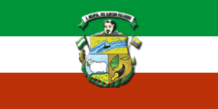
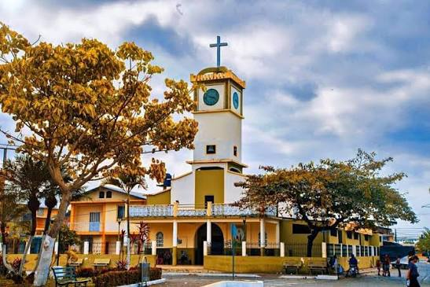
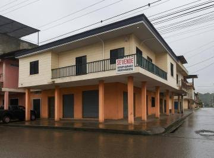
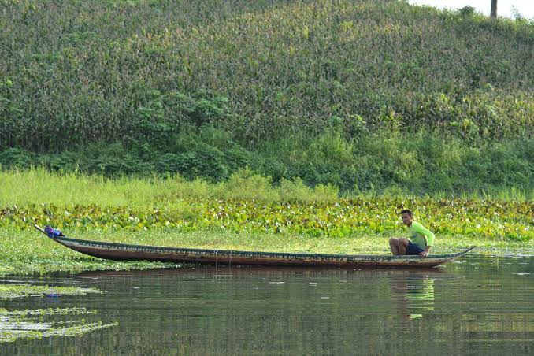
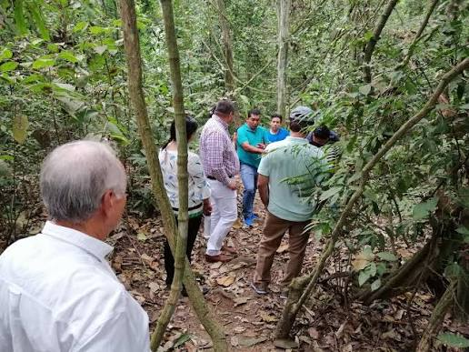
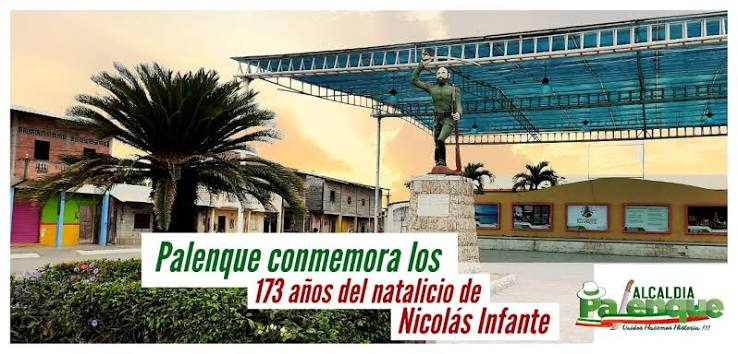
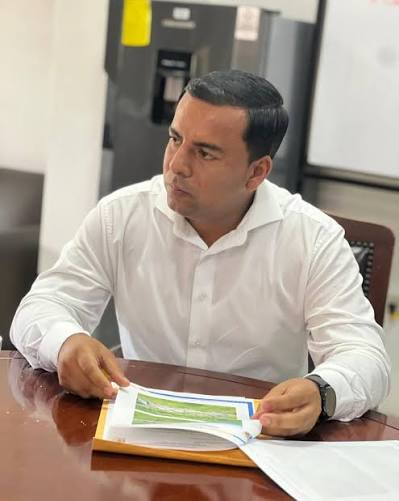
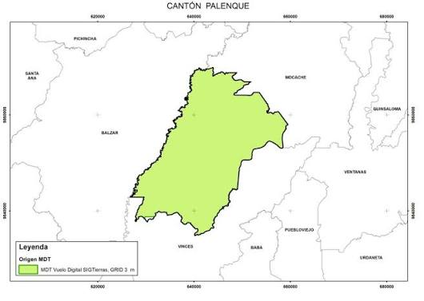

El cantón Palenque está ubicado en la provincia de Los Ríos, Ecuador. Fue cantonizado el 2 de agosto de 1990, durante el gobierno de Rodrigo Borja. Es conocido como la "Cuna de Nicolás Infante Díaz", importante personaje de la Revolución Liberal ecuatoriana, quien nació en este territorio. Se caracteriza por su actividad agrícola y ganadera, especialmente por la producción de cacao, arroz y banano. Además, conserva las tradiciones montubias, como los rodeos, las cabalgatas y los bailes tradicionales.

Palenque.
Chanfaina.
Bollo de pescado.
Salchicha seca.
Cazuela de pescado.
Seco de pato.
Seco de gallina criolla.
Pescado frito.
Pescado asoleado.
Guatita.
Bolón de verde.
Torrejas de choclo.
Arroz con menestra y carne asada.
Es un lugar turístico religioso porque recibe visitantes y creyentes que acuden a venerar a San Nicolás de Tolentino, patrono del cantón.

Es un sitio de importancia histórica porque está relacionado con Nicolás Infante Díaz y la Revolución Liberal ecuatoriana. Es visitado por personas interesadas en conocer la historia del cantón.

Es un atractivo natural porque alberga una gran variedad de flora y fauna. Se pueden observar diferentes especies de aves, como garzas, patos, pericos y gallaretas.

Es turística porque conserva una importante variedad de plantas y animales. Es visitada por estudiantes, investigadores y amantes de la naturaleza para conocer y estudiar su biodiversidad.

Es un espacio cultural donde se encuentra la escultura de Nicolás Infante Díaz. Allí se realizan actos cívicos, eventos culturales y celebraciones por la cantonización.


El actual alcalde del cantón Palenque es el tecnólogo Jordy Jair Carriel Navarrete, quien ejerce sus funciones durante el período 2023-2027. Está encargado de dirigir la administración municipal y promover obras y proyectos para el desarrollo y bienestar de sus habitantes.
Según el Censo de Población y Vivienda de 2022 del INEC, el cantón Palenque cuenta con 24.838 habitantes.

Volver al índice principal